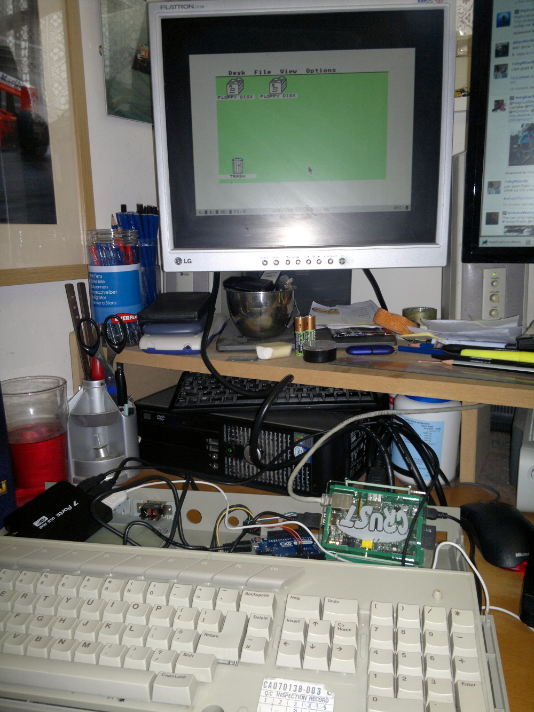
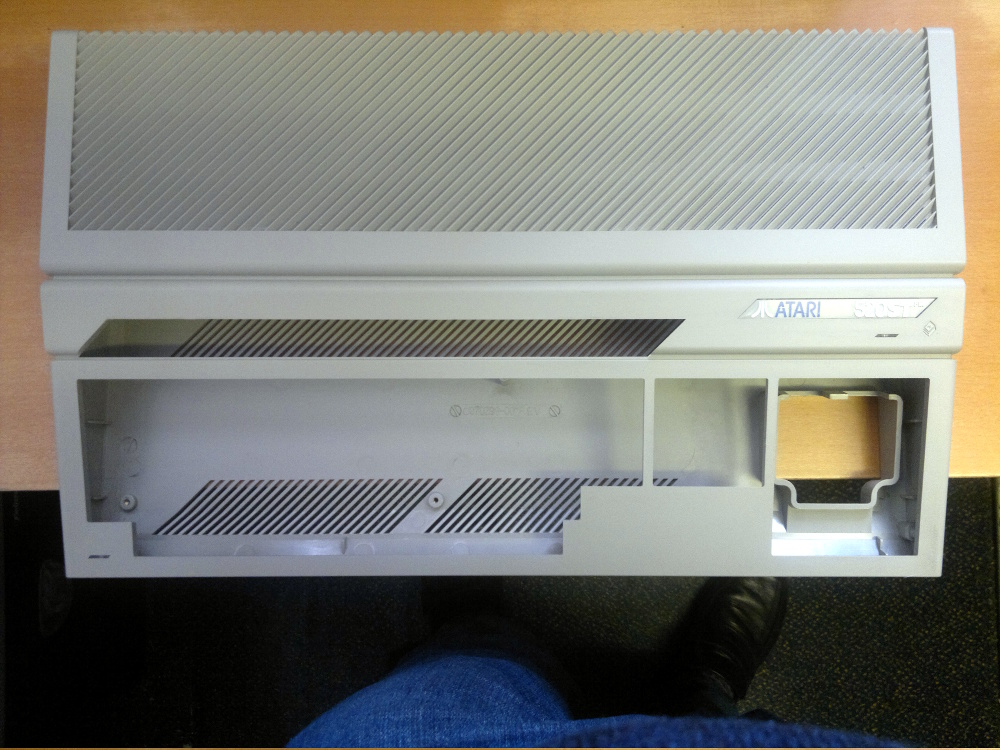

Atari Pi Project: Components | Arduino Wiring | Arduino Coding | Pi Mounting | Pi Software | Final Assembly
Components Used
- Atari ST
Among my collection of Atari hardware I had a non-working 520STFM that I had purchased some time ago meaning to repair it. The case was in very good condition not being faded as some ST's can be and with a good complete keyboard with all keys working so I decided to use it for this project. Please DON'T use working machines for this kind of project. - Raspberry Pi
I used an original 256MB Model 'B' Pi as I had one to hand but as I don't plan to use the ethernet connection, beyond loading some initial packages, a model 'A' would also have worked. I used a 4GB SD card for the OS. - Arduino Leonardo
The Arduino is used to interface between the Atari ST keyboard and the Pi. The Leonardo is able to act directly as a USB keyboard controller so makes this much easier to do. I did originally try to use an Arduino Uno which can also act as a USB keyboard by re-writing the firmware with a custom version. Unfortunately, this didn't work as the Uno shares its hardware serial port with the USB connection and the Atari keyboard would not work correctly with a software serial port. I also considered connecting the ST keyboard directly to the Pi but wasn't confident that I could get it working that way. - USB Hub
To avoid multiple mains plugs being required I wanted to power everything including the Pi from a powered USB hub. To enable that I brought a powered hub on Ebay which came with a 2A power supply which should be more than enough. - USB Speaker
Mostly I will be using the Atari with a monitor that doesn't have any speakers built-in so I wanted to include a small speaker in the case. I also read that the Raspberry Pi headphone jack doesn't work very well so I brought a small speaker on Ebay that would fit in the case and also required only a USB connection for power and audio. If you were going to make one of these to use with a TV then an internal speaker wouldn't be required. - USB Mouse
I used a Microsoft Compact mouse that I already owned which was coincidentally a similar colour scheme to the Atari itself. With some software changes it would be possible to use an original Atari mouse but I much prefer the feel of a modern mouse. - USB/HDMI Cables
A number of USB leads are required depending on the hardware you are intending to use.
The Atari cases are easy to strip and clean-up. To open and remove everything from the case you just need a small cross-headed screwdriver. Be careful when cleaning the case as some of the small plastic parts can be brittle.


Return to home page.